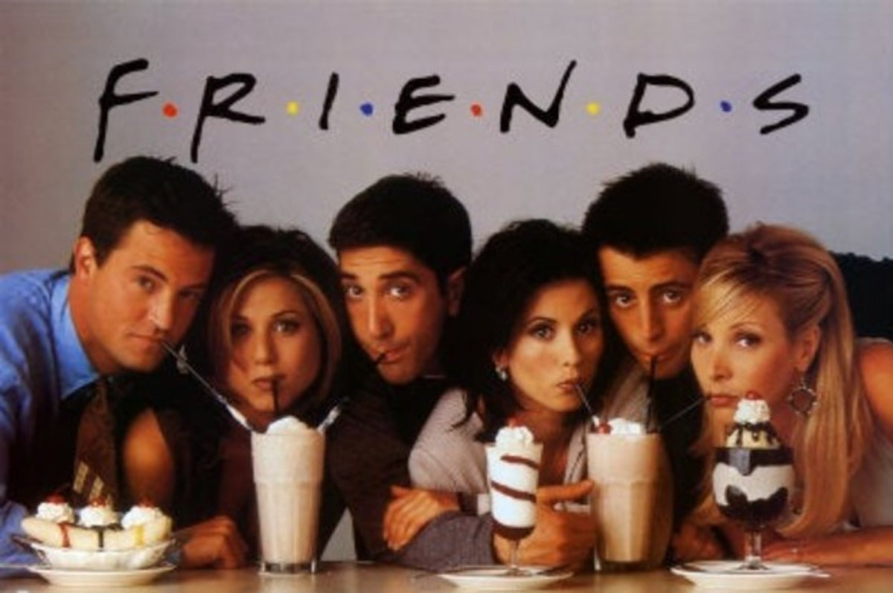

Friends is an American television sitcom, created by David Crane and Marta Kauffman, which aired on NBC from September 22, 1994, to May 6, 2004, lasting ten seasons. With an ensemble cast starring Jennifer Aniston, Courteney Cox, Lisa Kudrow, Matt LeBlanc, Matthew Perry and David Schwimmer, the show revolves around six friends in their 20s and 30s who live in Manhattan, New York City.
Filming took place at Warner Bros. Studios in Burbank, California. All ten seasons of Friends ranked within the top ten of the final television season ratings; it ultimately reached the number-one spot in its eighth season. The series finale aired on May 6, 2004, and was watched by around 52.5 million American viewers, making it the fifth most-watched series finale in television history,and the most-watched television episode of the 2000s.
